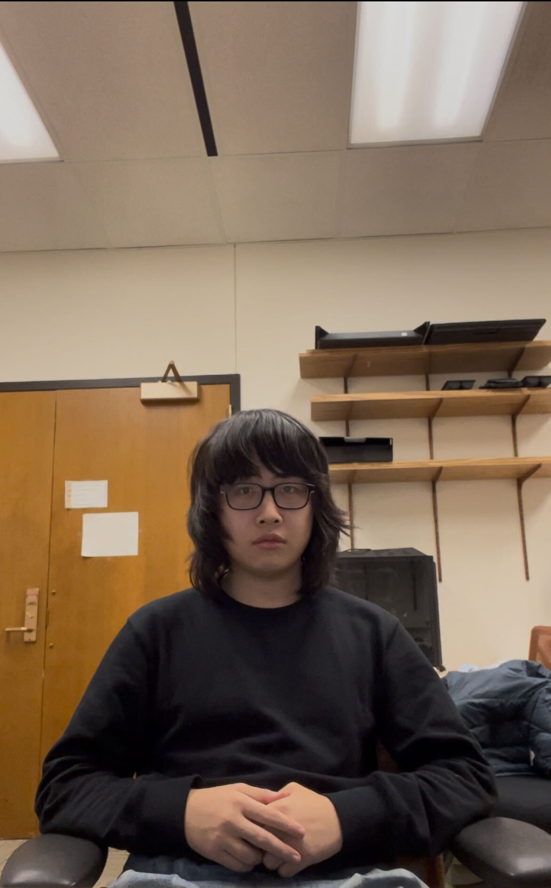

[ 08/2017 ] - [ 06/2021 ]
[ Institution ] Xi'an Jiaotong University
[ Degree ] Bachelor of Engineering in Electronic Engineering

[ 08/2017 ] - [ 06/2021 ]
[ Institution ] Xi'an Jiaotong University
[ Degree ] Bachelor of Engineering in Electronic Engineering
[ 08/2021 ] - [ 05/2023 ]
[ Institution ] University of Michigan
[ Program ] Electrical and Computer Engineering
[ Degree ] Master of Science
[ 09/2023 ] - Present
[ Institution ] University of Michigan
[ Program ] Electrical and Computer Engineering
[ Degree ] Doctor of Philosophy
My Ph.D. advisor is Qing Qu.
I seek to understand how generative models learn and behave, and to use these insights to make them more controllable, aligned, and reliable.
My research focuses on the foundations and applications of generative models. I combine tractable mathematical models with systematic experiments to understand mechanisms that persist in large-scale systems and use these insights to guide algorithm design.
Here are my works on generalization, memorization, and representations:
Here are my works on guidance, control, and alignment:
Here are my works on inverse problems and computational imaging: